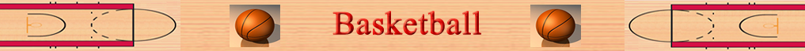

Basketball was invented by the Canadian physician James Naismith in December 1891. He introduced it to the Young Men’s Christian Association Training School, where he was an instructor, in Springfield, Massachusetts. Naismith organized indoor winter basketball as a recreational activity. Basketball combined elements of American football, soccer, and hockey into one game. A soccer ball was used at first and the goals were wooden baskets attached to walls. Teams had 9 players each. By 1897-1898, teams of five became the norm. the game’s popularity grew steadily and U.S. soldiers during World War II (1939-1945) spread the sport to other countries.
Many U.S. colleges adopted the game of basketball, especially between 1893 and 1895. By the 1950s, college basketball become a major sport, leading to the developed of professional basketball.
The first professional basketball league was the National Basketball League, formed in 1898, but in disbanded in five years, leading to many loosely organized leagues throughout northeastern U.S. The most famous teams of this era were the Original Celtics and Harlem Globetrotters.
In 1949, the National Basketball League, formed in 1937, and the Basketball Association of America, formed in 1946, combined to form the National Basketball Association (NBA). The NBA was immensely successful and is the major basketball league in the U.S. today. The Boston Celtics and Los Angeles Lakers dominated the 1950s to 1970s with star players like Wilt Chamberlain, Bill Russell, and Kareem Abdul-Jabbar.
The NBA dropped in popularity during the late 1970s but surged back through their popular star players like Larry Bird and Magic Johnson. Michael Jordan, who is considered by many to be the greatest basketball player ever, of the Chicago Bulls rose to stardom in the 1980s and ever since, the NBA has maintained its popularity through the steady rise of basketball stars.
In 1959 a Basketball Hall of Fame was founded in Springfield, Massachusetts. It included many significant people of basketball including players, coaches, and referees.

